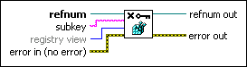

Delete Registry Key VI
Owning Palette: Windows Registry Access VIs
Requires: Base Development System (Windows)
Deletes the specified key or subkey.
 | Caution Incorrectly modifying the registry can damage Windows or prevent you from starting Windows. |

 Add to the block diagram Add to the block diagram |
 Find on the palette Find on the palette |